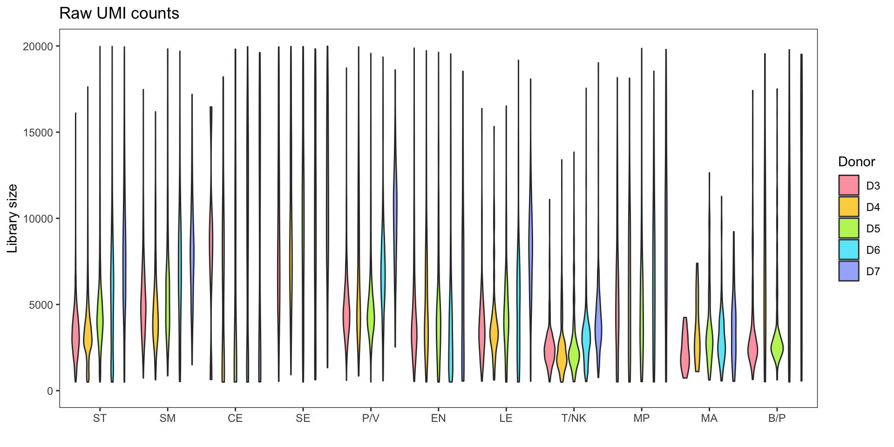
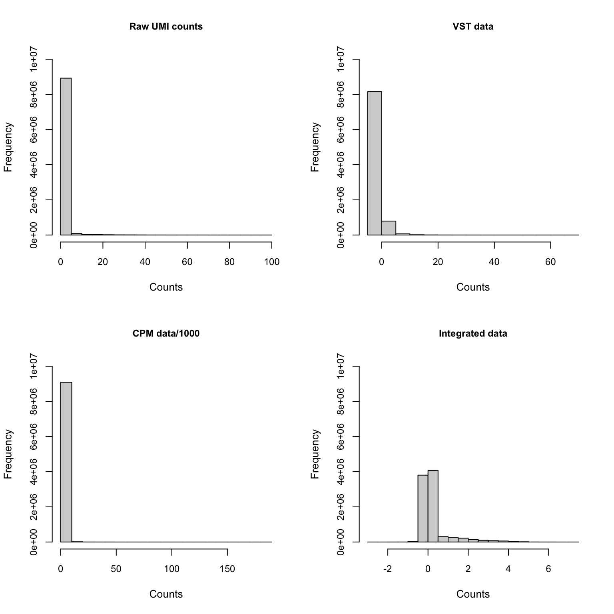
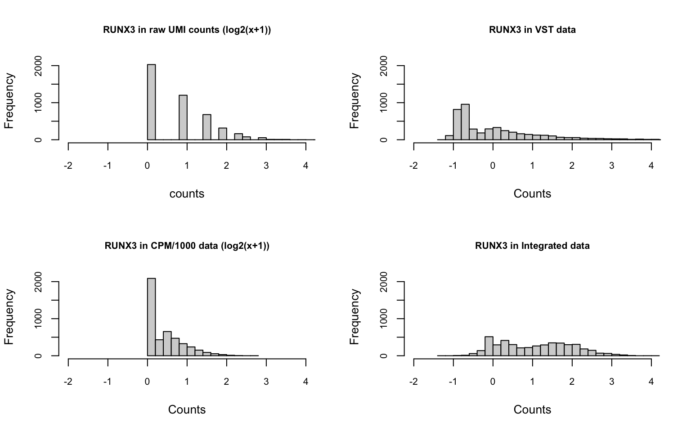

Data and Clusters
Chih-Hsuan Wu
Last updated: 2023-06-15
Checks: 5 2
Knit directory: DEanalysis/
This reproducible R Markdown analysis was created with workflowr (version 1.7.0). The Checks tab describes the reproducibility checks that were applied when the results were created. The Past versions tab lists the development history.
The R Markdown is untracked by Git. To know which version of the R Markdown file created these results, you’ll want to first commit it to the Git repo. If you’re still working on the analysis, you can ignore this warning. When you’re finished, you can run wflow_publish to commit the R Markdown file and build the HTML.
Great job! The global environment was empty. Objects defined in the global environment can affect the analysis in your R Markdown file in unknown ways. For reproduciblity it’s best to always run the code in an empty environment.
The command set.seed(20230508) was run prior to running the code in the R Markdown file. Setting a seed ensures that any results that rely on randomness, e.g. subsampling or permutations, are reproducible.
Great job! Recording the operating system, R version, and package versions is critical for reproducibility.
Nice! There were no cached chunks for this analysis, so you can be confident that you successfully produced the results during this run.
Using absolute paths to the files within your workflowr project makes it difficult for you and others to run your code on a different machine. Change the absolute path(s) below to the suggested relative path(s) to make your code more reproducible.
| absolute | relative |
|---|---|
| ~/Google Drive/My Drive/spatial/10X/DEanalysis | . |
Great! You are using Git for version control. Tracking code development and connecting the code version to the results is critical for reproducibility.
The results in this page were generated with repository version 366cd53. See the Past versions tab to see a history of the changes made to the R Markdown and HTML files.
Note that you need to be careful to ensure that all relevant files for the analysis have been committed to Git prior to generating the results (you can use wflow_publish or wflow_git_commit). workflowr only checks the R Markdown file, but you know if there are other scripts or data files that it depends on. Below is the status of the Git repository when the results were generated:
Untracked files:
Untracked: .DS_Store
Untracked: analysis/.DS_Store
Untracked: analysis/.Rhistory
Untracked: analysis/data_clusters.Rmd
Untracked: analysis/group12_13.Rmd
Untracked: analysis/group2_19.Rmd
Untracked: analysis/group8_17&2_19.Rmd
Untracked: analysis/methods_details.Rmd
Untracked: analysis/new_criteria.Rmd
Untracked: data/10X_inputdata.RData
Untracked: data/10X_inputdata_DEresult.RData
Untracked: data/10X_inputdata_cpm.RData
Untracked: data/10X_inputdata_integrated.RData
Untracked: data/10X_inputdata_lognorm.RData
Untracked: data/10Xdata_annotate.rds
Note that any generated files, e.g. HTML, png, CSS, etc., are not included in this status report because it is ok for generated content to have uncommitted changes.
These are the previous versions of the repository in which changes were made to the R Markdown (analysis/data_clusters.Rmd) and HTML (docs/data_clusters.html) files. If you’ve configured a remote Git repository (see ?wflow_git_remote), click on the hyperlinks in the table below to view the files as they were in that past version.
| File | Version | Author | Date | Message |
|---|---|---|---|---|
| html | 366cd53 | C-HW | 2023-06-06 | add group8_17&2_19 |
| html | 13d726d | C-HW | 2023-05-18 | add DE results on different groups |
| html | fc9f4b6 | C-HW | 2023-05-18 | add new_criteria |
| html | 7586953 | C-HW | 2023-05-11 | add data_clusters |
Data introduction
In this project, we consider a scRNA-seq dataset containing human NK1, NK2 and NK3 T cells. There are a total of 4553 cells contributed by 5 donors, and 29382 genes sequenced. The raw counts are UMI counts generated from 10X protocols.
There are three different datasets used as inputs in this project.
- Raw data: The raw UMI counts generated from 10X protocols
- Seurat normalized data: The normalized counts from each input sample via ‘Seurat::NormalizeData(x, normalization.method = “LogNormalize”, scale.factor = 10000)’
- Integrated data: The normalized data removing batch effects (only containing 2000 genes)
- CPM data: CPM (Counts Per Million) are obtained by dividing counts by the library counts sum and multiplying the results by a million.
Library size
setwd("~/Google Drive/My Drive/spatial/10X/DEanalysis")
alldata = readRDS("./data/10Xdata_annotate.rds")
AllCelltypePrep = subset(alldata, subset = expCond2 %in% c("D3","D4","D5","D6","D7"))
rm(alldata)
gc() used (Mb) gc trigger (Mb) limit (Mb) max used (Mb)
Ncells 7396517 395.1 11716810 625.8 NA 11429539 610.5
Vcells 1154081066 8805.0 1887062927 14397.2 16384 1887061169 14397.2AllCelltypePrep@active.ident = recode(AllCelltypePrep@active.ident,
"ST1" = "ST",
"ST2" = "ST",
"ST3" = "ST",
"ST4" = "ST",
"ST5" = "ST",
"P/V1" = "P/V",
"P/V2" = "P/V",
"P/V3" = "P/V",
"EN1" = "EN",
"EN2" = "EN",
"EN3" = "EN",
"EN4" = "EN",
"T/NK1" = "T/NK",
"T/NK2" = "T/NK",
"T/NK3" = "T/NK",
)
df = data.frame(libsize = colSums(AllCelltypePrep@assays$RNA@counts), celltype = AllCelltypePrep@active.ident, donor = AllCelltypePrep@meta.data$expCond2)
ggplot(df, aes(x = factor(celltype,levels = levels(AllCelltypePrep@active.ident)), y=libsize, fill = factor(donor, levels = c("D7", "D6", "D5", "D4", "D3")))) + geom_violin() + theme_minimal() + ylab("library size") + xlab("") + scale_fill_discrete(name = "donors", labels=c("D7", "D6", "D5", "D4", "D3")) + theme_bw() + theme(panel.grid = element_blank())
| Version | Author | Date |
|---|---|---|
| f313764 | C-HW | 2023-05-11 |
Gene expression summary

| Version | Author | Date |
|---|---|---|
| f313764 | C-HW | 2023-05-11 |
zoom in raw data 
| Version | Author | Date |
|---|---|---|
| f313764 | C-HW | 2023-05-11 |
There’s one highly expressed gene MALAT1 in raw data. After normalization, the range of the counts changes a lot. (The integrated data doesn’t contain MALAT1)
Hippo cluster result
We applied HIPPO (Heterogeneity-Inspired Pre-Processing tOol) on the raw counts to get 20 clusters. Especially, cluster 2, 8, 12, 13, 17, 19 will be used to demonstrate our poisson glmm DE methods.
UMAP


Zero proportion plot


Donor effect variation
To illustrate the differences in contribution of variation across different datasets, we employed linear regression models (lm(log2(counts + 1) ~ donor + celltype)) to analyze cells in group 12 and group 13. The donor variation and celltype variation were determined by calculating the variances of their respective components. Additionally, the res variation was obtained by squaring the residual standard error. The following plots exhibit the top 500 genes with the highest donor variations, showcasing the contributions of these variations as percentages. The genes were organized into bins based on the quantiles of donor variations. Within each bin, the representative percentage was determined by calculating the median value.
The integration of data did partially reduce the donor variations, although it did not eliminate them completely. However, it is worth noting that the normalization and batch effect removal processes employed also resulted in a reduction in celltype variation. This reduction in celltype variation may pose challenges for conducting further differential expression (DE) analysis.

sessionInfo()R version 4.2.2 (2022-10-31)
Platform: x86_64-apple-darwin17.0 (64-bit)
Running under: macOS Big Sur ... 10.16
Matrix products: default
BLAS: /Library/Frameworks/R.framework/Versions/4.2/Resources/lib/libRblas.0.dylib
LAPACK: /Library/Frameworks/R.framework/Versions/4.2/Resources/lib/libRlapack.dylib
locale:
[1] en_US.UTF-8/en_US.UTF-8/en_US.UTF-8/C/en_US.UTF-8/en_US.UTF-8
attached base packages:
[1] stats4 stats graphics grDevices utils datasets methods
[8] base
other attached packages:
[1] SeuratObject_4.1.3 Seurat_4.3.0
[3] reshape_0.8.9 SingleCellExperiment_1.20.1
[5] SummarizedExperiment_1.28.0 Biobase_2.58.0
[7] GenomicRanges_1.50.2 GenomeInfoDb_1.34.9
[9] IRanges_2.32.0 S4Vectors_0.36.2
[11] BiocGenerics_0.44.0 MatrixGenerics_1.10.0
[13] matrixStats_0.63.0 ggpubr_0.6.0
[15] dplyr_1.1.2 ggplot2_3.4.2
loaded via a namespace (and not attached):
[1] backports_1.4.1 workflowr_1.7.0 plyr_1.8.8
[4] igraph_1.4.2 lazyeval_0.2.2 sp_1.6-0
[7] splines_4.2.2 listenv_0.9.0 scattermore_0.8
[10] digest_0.6.31 htmltools_0.5.5 fansi_1.0.4
[13] magrittr_2.0.3 tensor_1.5 cluster_2.1.4
[16] ROCR_1.0-11 limma_3.54.2 globals_0.16.2
[19] spatstat.sparse_3.0-1 colorspace_2.1-0 ggrepel_0.9.3
[22] xfun_0.39 RCurl_1.98-1.12 jsonlite_1.8.4
[25] progressr_0.13.0 spatstat.data_3.0-1 survival_3.5-5
[28] zoo_1.8-12 glue_1.6.2 polyclip_1.10-4
[31] gtable_0.3.3 zlibbioc_1.44.0 XVector_0.38.0
[34] leiden_0.4.3 DelayedArray_0.24.0 car_3.1-2
[37] future.apply_1.10.0 abind_1.4-5 scales_1.2.1
[40] edgeR_3.40.2 DBI_1.1.3 spatstat.random_3.1-4
[43] rstatix_0.7.2 miniUI_0.1.1.1 Rcpp_1.0.10
[46] viridisLite_0.4.2 xtable_1.8-4 reticulate_1.28
[49] htmlwidgets_1.6.2 httr_1.4.5 RColorBrewer_1.1-3
[52] ellipsis_0.3.2 ica_1.0-3 farver_2.1.1
[55] pkgconfig_2.0.3 uwot_0.1.14 deldir_1.0-6
[58] sass_0.4.5 locfit_1.5-9.7 utf8_1.2.3
[61] labeling_0.4.2 tidyselect_1.2.0 rlang_1.1.1
[64] reshape2_1.4.4 later_1.3.0 munsell_0.5.0
[67] tools_4.2.2 cachem_1.0.8 cli_3.6.1
[70] generics_0.1.3 broom_1.0.4 ggridges_0.5.4
[73] evaluate_0.20 stringr_1.5.0 fastmap_1.1.1
[76] goftest_1.2-3 yaml_2.3.7 knitr_1.42
[79] fs_1.6.2 fitdistrplus_1.1-11 purrr_1.0.1
[82] RANN_2.6.1 nlme_3.1-162 pbapply_1.7-0
[85] future_1.32.0 whisker_0.4.1 mime_0.12
[88] compiler_4.2.2 rstudioapi_0.14 plotly_4.10.1
[91] png_0.1-8 ggsignif_0.6.4 spatstat.utils_3.0-2
[94] tibble_3.2.1 bslib_0.4.2 stringi_1.7.12
[97] highr_0.10 lattice_0.21-8 Matrix_1.5-4
[100] vctrs_0.6.2 pillar_1.9.0 lifecycle_1.0.3
[103] spatstat.geom_3.1-0 lmtest_0.9-40 jquerylib_0.1.4
[106] RcppAnnoy_0.0.20 data.table_1.14.8 cowplot_1.1.1
[109] bitops_1.0-7 irlba_2.3.5.1 httpuv_1.6.9
[112] patchwork_1.1.2 R6_2.5.1 promises_1.2.0.1
[115] KernSmooth_2.23-20 gridExtra_2.3 parallelly_1.35.0
[118] codetools_0.2-19 MASS_7.3-59 rprojroot_2.0.3
[121] withr_2.5.0 sctransform_0.3.5 GenomeInfoDbData_1.2.9
[124] parallel_4.2.2 grid_4.2.2 tidyr_1.3.0
[127] rmarkdown_2.21 carData_3.0-5 Rtsne_0.16
[130] git2r_0.32.0 spatstat.explore_3.1-0 shiny_1.7.4